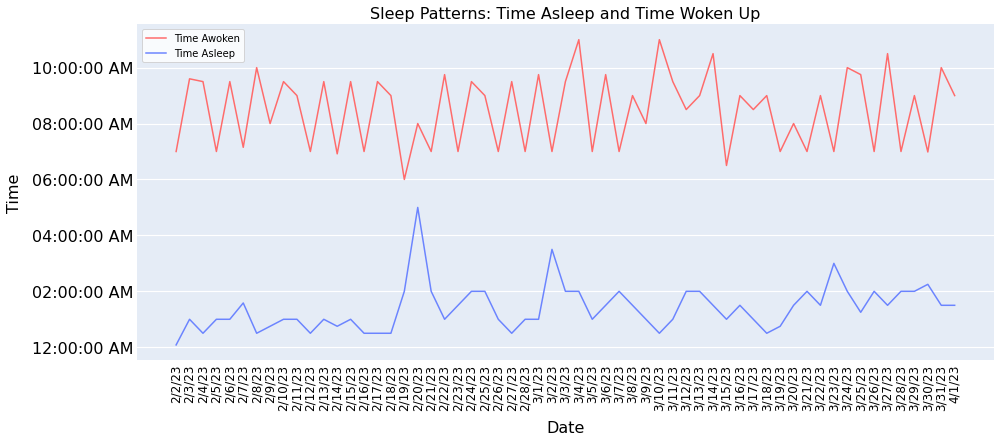

Better Rest: A Sleep Quality Self-Study
The detailed analysis of sleep quality as a product of factors both deliberate and inadvertent.
Introduction
A key component of human wellbeing, sleep is essential to both our physical and mental states. However, many people have trouble getting enough of it, which negatively impacts their general quality of life. I started a personal mission to enhance the quality of my own sleep throughout this semester with the help of data. I dutifully kept data over the course of 60 days, from February to April, with the goal of determining the variables that most directly influence my sleep quality, graded on a scale from 1 (worst) to 5 (best).
The main goal of this study was to investigate the numerous variables that affect sleep quality and use the knowledge gained to create strategies that will improve sleep. I set out to find significant linkages that could shed light on the complex dynamics of sleep and its contributors by meticulously recording and analyzing data linked to my sleep habits, environmental factors, lifestyle decisions, and other relevant variables.
Beyond feeling rested and conscious during waking hours, improving sleep quality has a broad impact. A good night's rest is crucial for immune system health, cognitive function, emotional stability, and general physical well-being. As a result, by examining the variables that affect sleep quality, my research will benefit both my personal wellbeing and that of others who may face similar difficulties in their attempt for the best possible sleep.
Data Collection
The data collected for this sleep study total 12 variables that were recorded in a spreadsheet over the course of 60 days. The night of sleep (MM/DD/YY) served as the index. The location of sleep, presence of a sleeping partner, time going to bed, nap frequency, and the time waking up were the main focuses. Also collected were length of time spent sleeping, sleep interruption frequency, and dream recollection.
Time
The time-series graph displays interesting and significant patterns. First of all, the data shows that from February to April, the general time awoken trend remained stable with no significant deviations noted. On the other hand, the time asleep revealed a considerable change, showing an increase of roughly one hour over the same two months. The erratic zig-zag pattern in wake-up time can be attributed to three 8-am classes in my academic schedule. An outlier value, February 20th, marks the occurrence of a significant illness which inhibited sleep.
Key Features
This parallel categories plot is beneficial as it can visualize numerous dimensions at once. I selected multiple features which I was most curious about, in order to see their impact on sleep. By hovering your cursor over variables or lines, exact numerical information pops up regarding count and percentage, and it becomes easier to see the trend of selected variables. We can see some intriguing trends from this. Namely, sleeping at home, without a partner, without taking naps, and ≥7 hours of rest resulted in the greatest sleep quality. Surprisingly, getting more than 8 hours of sleep decreased sleep quality.
Naps Deep Dive
This scatterplot showcases nap length correlated with total sleep time. Nights where I had napped earlier that day are shown as enlarged circles, whereas nights without prior naps are smaller circles on the x-axis. Jitter was applied to the zero-nap data so overlapping points could be distinguished. Sleep quality is represented by the color on the right, 1-5 worst to best. Where I napped from this graph, it appears that when I took shorter naps, the quality and length of overall sleep increased.